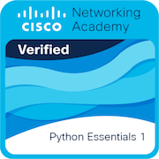
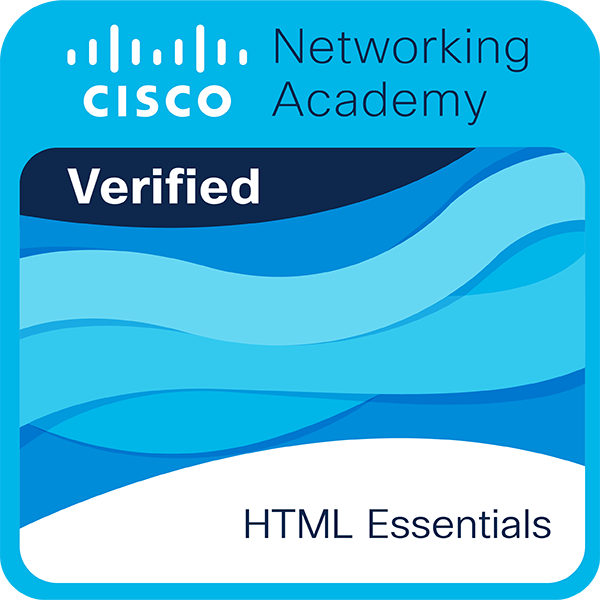

Professional Summary
A dedicated and high-achieving 3rd-year Computer Science student at Shaqra University with a perfect 4.0 GPA. Highly motivated to learn system architecture, web development technologies, and algorithmic problem-solving. Focused on building clean, efficient code using Python and developing structured software applications.
Education
Bachelor of Science in Computer Science
Shaqra University
3rd Year Student | Current GPA: 4.0 / 5.0
Key Coursework: Web Programming, Computer Organization & Architecture, Data Structures & Algorithms, Linear Algebra.
Certifications
Python Essentials 1.1
Cisco Networking Academy / OpenEDG

Technical Certification
Course Badge

Technical Skills
Programming Languages: Python
Web Development: HTML5, CSS3, Responsive Web Design
Tools & Concepts: Git, GitHub, Object-Oriented Programming (OOP)
Academic Projects
Personal CV Website
Designed and deployed a responsive personal portfolio website using semantic HTML5 and custom CSS3. Hosted publicly using GitHub Pages to demonstrate foundational front-end development and version control skills.
Computer Architecture & Systems Research
Collaborated on analyzing hardware component workflows, focusing on memory management, CPU instruction cycles, and processing optimization methods.